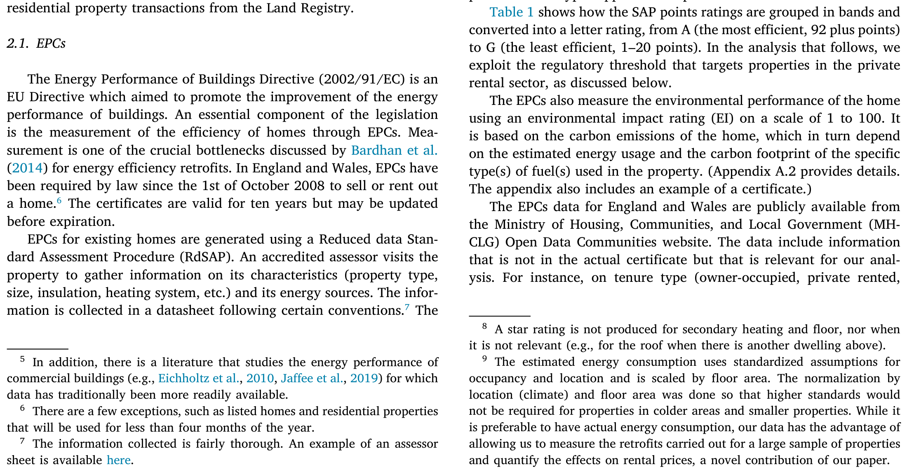
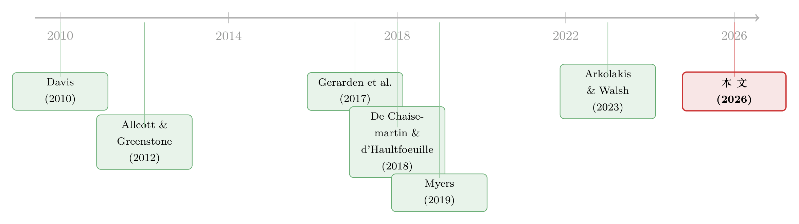

更高效，却没有更干净：一道绿色法规的两个意外
本文读的是 Clara, Cocco, Naaraayanan & Sharma (2026, Journal of Financial Economics)：英国 2015 年强制私人出租房达到最低能效标准，确实逼出了一批改造，但房东只挑「低投入、高回报」的小修小补；用工具变量双重差分剥离自选择后，租金几乎没有上涨——房东并未因此被补偿。更耐人寻味的是，能效分数涨了，碳足迹却没有同步改善：因为这把尺子量的是「能源成本」而不是「碳」，于是政策奖励了「换成更便宜的燃料」，而不是「换成更干净的燃料」。
1 引言：一道「看上去很成功」的绿色法规
先抛一个让人有点不安的问题：如果一项气候法规，让所有被监管的房子能效评分都明显上升了，我们能不能就此宣布它「成功」了？
听上去这几乎不需要思考。住宅运行（也就是我们日常居住的房子）大约占到全球能源消耗的 22%、二氧化碳排放的 17%（若把建造和非住宅也算进去，份额分别升到 35% 和 38%）。让房子更节能，是应对气候变化里最直接、最「划算」的一块。于是各国政府纷纷立法去填补所谓的「能效缺口（energy efficiency gap）」——人们明明能靠节能投资省钱，却迟迟不投，那就用监管把它逼出来。
英国就立了这样一条法规：2015 年 3 月议会通过的 最低能效标准（Minimum Energy Efficiency Standard, MEES），要求私人出租的房屋必须达到某个能效门槛才能合法出租。这篇论文做的，正是给这条法规做一次彻底的「体检」：它到底逼出了哪些投资？这些投资的财务回报如何？谁掏了钱、谁又拿到了好处？最后——它真的让房子更「绿」了吗？
首先要说，从最朴素的标准看，这条法规是奏效的：被监管的出租房，能效分数确实涨上去了。但本文真正的价值，恰恰在于它没有停在这里。它顺着两条线一路追问下去，结果挖出了两个让人意外的反转。读懂这两个反转，比记住「政策有效」这四个字重要得多。
2 那把叫 SAP 的尺子：制度与数据
要理解后面的反转，得先看清这条法规是用什么「尺子」来量房子的。
本文的主数据，是英格兰和威尔士的 能源性能证书（Energy Performance Certificate, EPC）。自 2008 年 10 月起，房屋只要要出售或出租，法律上就必须持有一张有效的 EPC。一名有资质的评估师上门，记录房屋的类型、面积、保温、采暖系统、能源种类等信息，录入政府认可的软件，生成证书；一张证书成本 £60–120，有效期十年。整套数据覆盖约 1400 万套独立住宅、1770 万张证书——相比 2010 年英国估计的 2420 万套总住宅存量，这几乎是一份「全样本」。其中能观测到多张证书（即前后改造对比）的，有 680 万条记录、310 万套房；两张证书之间平均间隔 4.38 年。
EPC 的核心，是一把从 1 到 100 的 SAP 分数（SAP points），再折算成 A 到 G 的字母评级——A 最高效（92 分以上），G 最差（1–20 分）。MEES 法规盯住的，正是这条评级带上的某个门槛。

Table 1: shows how the SAP points ratings are grouped in bands and
但这里藏着全文最关键的一个制度细节，请务必记住：SAP 分数衡量的不是「碳」，而是「能源运行成本」。一套房子的总能源成本，等于它在采暖、热水、通风、照明等各项用途上的估计能耗，分别乘以所用燃料的现行价格，再加总。用一个忠实于论文文字的写法：
$$\text{EnergyCost} = \sum_{f} Q_f \times P_f$$
其中 \(Q_f\) 是燃料 \(f\) 的能耗，\(P_f\) 是它的价格。SAP 分数越高，意味着这套房子按当前燃料价格算下来「越省钱」。先把这个公式放在心里——第二个反转就从它身上长出来。
还有一个英国特有的制度安排同样要紧：在英格兰和威尔士，水电燃气账单通常不含在房租里，而是由租客直接支付。 这意味着房东做了节能改造、压低了能源账单，省下的钱进的是租客的口袋，房东一分钱也拿不到。房东能指望的唯一回报，是「改造之后能不能多收点租」。这个错配，是理解房东行为的钥匙。
3 识别策略：把「监管门槛」当成工具变量
接着，一个自然的问题是：怎么把「法规造成的改造和租金变化」从一堆噪音里干净地分离出来？
最直接的做法是 双重差分（difference-in-differences, DiD）：拿私人出租房当处理组、自住房当对照组，比较法规通过前后、门槛之上与门槛之下房屋的租金变化，并控制房屋固定效应与时间固定效应。这一步给出的结果是：租金上涨了 0.9%，折合每年约 £70.2,统计上显著。
但真正关键的一步在于，作者并不信任这个 0.9%。原因很简单：会去做改造、从而被我们观测到「第二张证书」的房东，本身就不是随机的——他们可能本来就打算涨租、或者房子有别的我们看不见的变化。这是典型的自选择（selection）。换句话说，0.9% 很可能把「法规的效应」和「房东自己的选择」混在了一起，只能当作一个上界来读。
于是作者祭出 工具变量双重差分（instrumented DiD, IVDiD）（方法上承接 De Chaisemartin & d'Haultfoeuille, 2018 的模糊 DiD 和 Hudson, Hull & Liebersohn, 2017）。思路很巧：用房屋在法规出台前的能效状态，作为它法规后能效的工具变量，去比较那些「法规真正卡得住」的房子和「卡不住」的房子。第一阶段非常有力——被要求合规的房屋，能效分数平均跳升 6.6 分，相当于门槛以下房屋法规前中位分数的约 25%。这说明法规的「咬合力」是实打实的。
那第二阶段呢？这就引出了第一个反转。
4 第一个发现：投资发生了，但全是「小修小补」
法规确实在出租房上同时撬动了广延边际（更多房子去改造）和集约边际（单套房改得更多）的投资。但当作者去刻画这些改造到底改了什么时，画面变得很务实：房东扎堆去做的，是节能照明、主采暖控制器这一类低资本开支（low capex）的小动作，而不是换墙体保温、换整套采暖系统那种动辄上万英镑的大工程。
为什么偏偏是这些？因为本文同时算出了各类改造的内部收益率（internal rate of return, IRR）——结果恰恰是这些低投入的改造，IRR 最高。房东不是不理性，而是太理性了：在「省下的能源费归租客、自己只能靠涨租回本」的约束下，他们精准地挑出了那些花最少的钱、就能把评分推过门槛、回报率又最高的项目。
这里还有一个很漂亮的横截面规律：改造幅度强烈地取决于房子的起点。把多证书房屋按初始能效分成三档，最差那一档平均提升了 13.5 分（相当于基准值的 33.3%），而最好那一档反而下降了 3.4 分（-4.7%）——后者是房屋自然折旧、又没人去修的结果。起点越低，越值得也越容易被「推一把」过线。
5 反转一：房东其实没有被补偿
现在回到那个被悬置的第二阶段。剔除了自选择之后，IVDiD 给出的租金效应是：几乎为零，且不显著。
把两个数字摆在一起看就很说明问题：朴素 DiD 的 0.9%（上界）顶多只够补偿那些低投入改造的成本；而一旦用工具变量把自选择洗掉，连这点效应都消失了。哪怕把「能源账单的节省」也折算进去和租金涨幅比较，结论依旧——房东无法把节能省下的钱，通过涨租转嫁给租客。
这一下子把前面所有的「务实」都讲通了：正因为收不回钱，房东在没有法规时干脆不投；一旦被强制，就只做回报率最高的小修小补。背后的摩擦，文献里早有候选解释：信息不对称、注意力有限的租客根本不愿为「节能」多付钱（Myers, 2019），加上租客预期租期短、不值得去搜集这类房屋的专属信息。租客付账单、却不为节能买单；房东能涨租、却涨不动——这就是著名的「分割激励（split incentives）」在数据上的样子（Davis, 2010）。
6 反转二：更高效，却没有更干净
如果说第一个反转是关于「钱」，那第二个反转就直指法规的初心：它真的减碳了吗？
减排其实并不是 MEES 的明文目标，但鉴于住宅的碳足迹之大，这个维度无论如何都该被检验。作者的发现令人警醒：出租房相对自住房在能效上的进步，并没有换来碳足迹上相称的改善。能效涨了，碳却没怎么降。
为什么会这样？回到第 2 节那把尺子。EPC 的环境评级（即碳足迹），依赖的是能耗乘以燃料的碳强度：
$$\text{Carbon} = \sum_{f} Q_f \times C_f$$
把它和能源成本的公式并排放在一起，分歧就一目了然了——能效奖励的是降低 \(P_f\)（价格）高的能源消耗，而减碳需要降低的是 \(C_f\)（碳强度）高的能源消耗。\(P_f\) 和 \(C_f\) 不是一回事，有时甚至背道而驰。
这正是全文的「核武」级洞见：把不同能源的「价格 × 数量」压成一个单一的成本型指标，确实让千差万别的房子在「成本」维度上变得可比、好管理；但它也可能制造出与减碳目标南辕北辙的激励——奖励「更便宜」的燃料，而非「更干净」的燃料。
而本文样本期里，恰恰上演了最坏的剧本：电力相对天然气越来越贵，于是「从电改成气」能立刻拉高能效分数——数据里也确实看到大量房屋从电转向气，而非相反。可问题是，这场燃料切换，偏偏发生在电力发电正快速去碳化（煤电退出）的时候（Arkolakis & Walsh, 2023 预测这一趋势还将延续）。换句话说，房东们在监管激励下，把房子从一种正在变干净的能源，切换到了一种被指标标成「更省钱」的能源。指标算它进步，地球却未必领情。雪上加霜的是，指标里用的碳排放因子并不经常更新，让这种背离更难被察觉。
7 文献脉络
把这篇论文放回它生长的土壤里，它的位置就清楚了。
一切的起点，是「能效缺口」这个老问题：Allcott & Greenstone (2012) 系统地问「能效缺口真的存在吗」，Gerarden et al. (2017) 进一步把缺口拆解为市场失灵与各种行为/信息摩擦，并区分出「私人能效缺口」。沿着「为什么人们不投」这条线，一支文献聚焦于租房市场的分割激励（Davis, 2010），以及租客是否真的会为节能付费——Myers (2019) 给出了「购房者注意力不足、节能成本资本化不充分」的微观证据。在英国本地的脉络上，Fuerst et al. (2015) 用享乐价格回归研究房价与能效的关系，但正如他们自己承认的，能效往往与看不见的房屋特征相关，识别始终是难题。

本文的处理，恰好在两点上推进了这条脉络。其一，它不再用享乐回归去硬碰内生性，而是把监管门槛本身当作工具变量，用 IVDiD（方法上接 De Chaisemartin & d'Haultfoeuille, 2018）干净地估出现金流（租金）效应。其二，它把视角从「房价/气候风险如何被资本化」（如 Bernstein, Gustafson & Lewis, 2019；Murfin & Spiegel, 2020 关于海平面上升的资本化研究）转向了房地产投资者面对的监管风险——一个此前被讨论得远远不够的维度。如果说「可持续」本身就是一场关于「测量什么、激励什么」的博弈，那么本文与博客上《良心、价格与监督：可持续投资如何悄悄抬高了治理成本》其实问的是同一类问题：当我们用一个指标去推动「绿色」，这个指标本身会反过来塑造行为。
评论与延伸（Q&A + 研究方向）
(a) 几个可能的疑问
Q：DiD 给出 0.9% 的显著租金上涨，IVDiD 却说没有效应，到底信哪个？
信 IVDiD，但要理解两者为何不同。
0.9%（约£70.2/年）来自朴素 DiD，里面混入了「会去改造的房东本就更可能涨租」这一自选择，所以只能当上界读。IVDiD 用法规前状态作工具，比较「法规真正卡住」与「卡不住」的房子，剥离了自选择，得到的是接近零、不显著的租金效应。两者的落差本身，就是自选择有多大的度量。
Q：用「法规前能效状态」当工具，排他性约束（exclusion restriction）站得住吗？
这是最该追问的地方。逻辑是：法规前状态只通过「是否被法规卡住、从而被迫改造、进而改变能效」这一条渠道影响租金。威胁在于，初始能效差的房子可能本就处在不同的租金趋势上（比如位于正在更新换代的街区）。作者用房屋与时间固定效应、以及第一阶段
6.6分（约25%）的强相关来支撑，但读者仍应把它读成「合规者（compliers）的局部平均处理效应（LATE）」，而非对所有房子的普适结论。
Q：能效分数明明涨了，凭什么说政策「没成功」？
取决于你问的是哪个目标。若目标是「提升能效评分」，它成功了；若目标是「让房东获得合理回报」，没有，房东未被补偿；若目标是「减碳」，也打了折扣，能效进步没有换来相称的碳下降。本文的贡献正是把这三个常被混为一谈的目标拆开来分别回答。
Q：「更高效却没更干净」会不会只是样本期电价飙升的偶然？
部分是时运，但机制是结构性的。偶然之处在于样本期内电力相对天然气变贵，恰好诱导了「电改气」；结构之处在于，只要指标是成本型（价格 × 数量）而非碳型（碳强度 × 数量），价格信号与碳信号就会周期性地错位。叠加电力正在去碳化、而碳因子更新滞后，偶然就被放大成了系统性偏误。
Q：为什么房东不直接做大改造，一劳永逸地提升房子价值？
因为账单由租客付，房东拿不到节能省下的钱，回报只能来自涨租，而涨租又被证明几乎为零。在这种约束下，唯有 IRR 最高的低投入改造才划算。这不是非理性，恰恰是把约束算得很清楚之后的理性最小化。
Q：这对中国/美国的政策设计有什么直接含义？
一个朴素但有力的提醒：指标即激励。任何把多种能源「折成一个数」的便利型指标，都可能在便于比较的同时偏离真实目标。若目标是减碳，就该直接对碳（或碳强度）计价/计分，而不是对成本计分，否则会奖励「换便宜燃料」而非「换干净燃料」。
(b) 几个可能的研究问题与提案
1. 把「指标错配」搬到信用市场：绿色债券/绿色贷款的认定标准是否也在奖励「便宜」而非「干净」？ - 【经济故事】本文的核心是「成本型指标 ≠ 碳型指标」。绿色信贷工具的资质认定同样依赖各类评分与分类法（taxonomy），如果这些标准里混入了成本维度，可能出现「贴绿标却不减碳」的发债人。 - 【可行性】中。需要绿色债券发行明细 + 发行人实际排放数据（如 Trucost/CDP），用分类法变更做事件研究。难点在于排放数据的可得性与口径一致性。
2. 监管风险的定价：MEES 这类强制改造法规，是否被资本化进了房东的融资成本与房产估值？ - 【经济故事】本文证明房东承担了未被补偿的合规成本。一个自然的延伸是：债权人是否提前看到了这块成本，并体现在按揭利率或抵押估值里？ - 【可行性】中。需把 EPC 数据与按揭/再融资数据匹配，用「门槛上/下」+ 法规前后做 DiD。识别上可沿用本文的门槛工具变量思路，doable 但数据匹配是硬骨头。
3. 出租房 vs 自住房的绿色溢价之谜，能否用「持有期/换手频率」直接检验？ - 【经济故事】本文猜测租客租期短、注意力有限是房东收不回投资的原因。若能直接度量预期持有期，就能检验「持有期越短、节能资本化越弱」这一机制。 - 【可行性】高。Land Registry 交易数据 + Rightmove 挂牌即可构造换手频率与挂牌时长，用横截面回归检验能效溢价随持有期的变化。
4. 把「公司债」视角接进来：重度暴露于强制减排法规的房地产投资信托（REITs），其债券利差是否更宽？ - 【经济故事】房地产是气候监管风险最集中的资产类别之一；若监管成本无法转嫁，债权人理应索取补偿。 - 【可行性】中。需 REITs 持有的物业组合的能效画像 + 其公司债二级市场利差。识别可借助 MEES 门槛收紧的时间节点。挑战在于把组合层面的能效暴露算清楚。
我的判断
这篇论文最让我欣赏的，是它的克制与诚实。它没有满足于「政策让能效上升」这个皆大欢喜的故事，而是用一个近乎全样本的数据，配上一个设计干净的门槛工具变量，把「谁付钱、谁受益、到底减没减碳」三个被习惯性混淆的问题，逐一拆开回答。「成本型指标会奖励便宜燃料而非干净燃料」这个洞见，看似简单，却具有超出英国住宅市场的一般性——它本质上是一则关于「指标设计如何反噬政策目标」的寓言。
对识别，我有两点保留。其一，IVDiD 估的是合规者的 LATE，把它外推到全部存量房需谨慎；初始能效最差的房子，很可能在区位、租客构成上系统性地不同，平行趋势（更准确说是工具的排他性）值得更多安慰性检验。其二，「更高效却没更干净」的结论，对样本期内电/气相对价格的特定走势有一定依赖；若能给出在不同价格情景下的反事实分解，结论会更稳。
后续我最想看到的，是把这套「监管风险—现金流—估值/融资成本」的链条一路打通到资本市场端：房东未被补偿的合规成本，最终是被房价、按揭利率，还是被持有这些资产的 REITs 债券利差吸收了？谁是这条链条上真正的最终承担者？回答了这个问题，「绿色监管的金融后果」才算讲完了一半的下半场。
参考文献
- Allcott, H., Greenstone, M. (2012). Is there an energy efficiency gap? Journal of Economic Perspectives 26(1), 3–28.
- Arkolakis, C., Walsh, C. (2023). Clean growth. NBER Working Paper (w31615).
- Bernstein, A., Gustafson, M.T., Lewis, R. (2019). Disaster on the horizon: The price effect of sea level rise. Journal of Financial Economics 134(2), 253–272.
- Davis, L.W. (2010). Evaluating the slow adoption of energy efficient investments: Are renters less likely to have energy efficient appliances? NBER Working Paper (W16114).
- De Chaisemartin, C., d'Haultfoeuille, X. (2018). Fuzzy differences-in-differences. Review of Economic Studies 85(2), 999–1028.
- Dubin, J.A., McFadden, D.L. (1984). An econometric analysis of residential electric appliance holdings and consumption. Econometrica 52(2), 345–362.
- Hudson, S., Hull, P., Liebersohn, J. (2017). Interpreting instrumented difference-in-differences. Metrics Note.
- Murfin, J., Spiegel, M. (2020). Is the risk of sea level rise capitalized in residential real estate? Review of Financial Studies 33(3), 1217–1255.
- Myers, E. (2019). Are home buyers inattentive? Evidence from capitalization of energy costs. American Economic Journal: Economic Policy 11(2), 165–188.